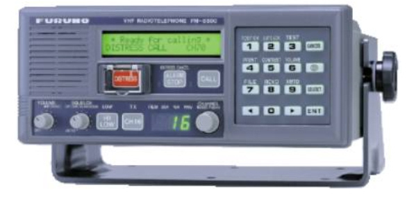
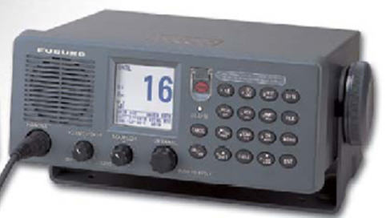
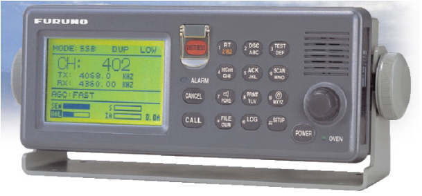
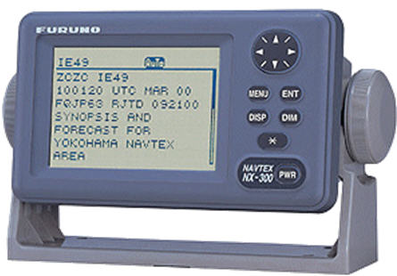
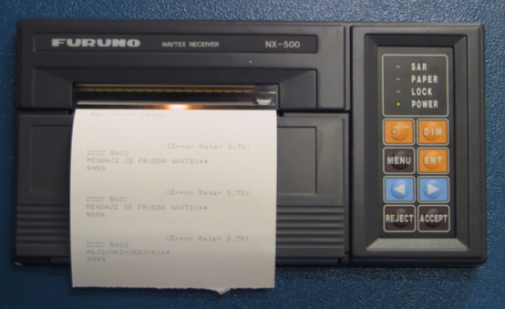

Equipos reales
La consola de alumno puede incluir equipos de comunicaciones reales (radio VHF, radio MF y receptor Navtex). En este caso, el alumno actúa sobre el equipo real y el panel simulado correspondiente no aparece en la pantalla de Control de Equipos.
Radioteléfono Furuno FM-8500 (radio VHF)

La funcionalidad de este equipo puede consultarse en el Manual de Operador del equipo FM-8500 que se adjunta como anexo.
Radioteléfono Furuno FM-8800 (radio VHF)

La funcionalidad de este equipo puede consultarse en el Manual de Operador del equipo FM-8800 que se adjunta como anexo.
Radioteléfono Furuno FS-1570/2570 (radio MF/HF)

La funcionalidad de este equipo puede consultarse en el Manual de Operador del equipo FS-1570 que se adjunta como anexo.
Receptor Navtex NX-300

La funcionalidad de este equipo puede consultarse en el Manual de Operador del equipo NX-300 que se adjunta como anexo.
Receptor Navtex NX-500

La funcionalidad de este equipo puede consultarse en el Manual de Operador del equipo NX-500 que se adjunta como anexo.